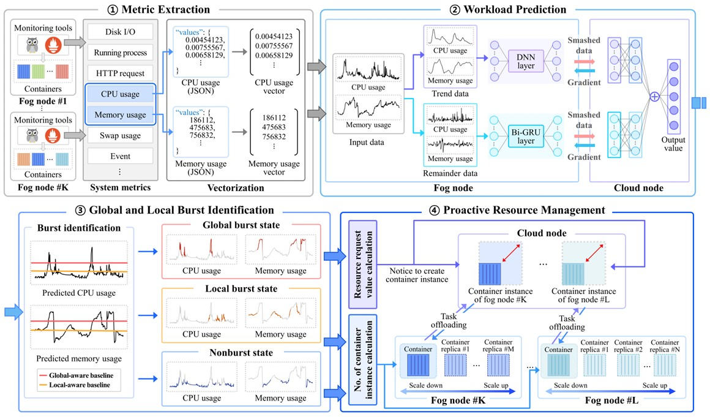

Ph.D. Student
Computer Science and Artificial Intelligence, Dongguk University
Advisor: Prof. Young-Sik Jeong
Ph.D. Student
Dongguk University
Hello! I am a Ph.D. student at Dongguk University and a member of the uCloud Computing Lab, advised by Prof. Young-Sik Jeong.
My research focuses on container autoscaling for cloud-native computing environments, particularly time-series forecasting, temporal workload pattern analysis, and adaptive resource management. I am interested in understanding workload characteristics and leveraging them to make more effective scaling decisions.
Ultimately, my research aims to develop intelligent resource management techniques that balance resource utilization and service stability while adapting to dynamically changing workloads.
Computer Science and Artificial Intelligence, Dongguk University
Advisor: Prof. Young-Sik Jeong
Computer Science and Artificial Intelligence, Dongguk University
Advisor: Prof. Young-Sik Jeong
Software & Security Convergence, Baewha Women's University
uCloud computing Lab., Dongguk University
Baewha Women’s University
Xinapse
Submitted in March 2026
In Preparation

Human-centric Computing and Information Sciences, vol. 15, no. 68, Dec. 2025.
EProRM predicts future workloads using a decomposition network (DecompNet) model with split learning and identifies burst states in the predicted workloads. Based on the identified burst states, EProRM proactively performs container autoscaling and offloading to improve resource efficiency and service continuity in fog computing environments.
The 18th International Conference on Computer Science and its Applications (CSA 2026), Ho Chi Minh City, Vietnam
The 18th International Conference on Computer Science and its Applications (CSA 2026), Ho Chi Minh City, Vietnam
The 20th International Conference on Multimedia and Ubiquitous Engineering (MUE 2026), Qingdao, China
The 17th International Conference on Computer Science and its Applications (CSA 2025), Phu Quoc, Vietnam
The 16th International Conference on Computer Science and its Applications (CSA 2024), Pattaya, Thailand
Korea Institute for Advancement of Technology (KIAT)
Institute for Information & Communication Technology Planning & Evaluation (IITP)
National Research Foundation of Korea (NRF)
National Research Foundation of Korea (NRF)
Institute for Information & Communication Technology Planning & Evaluation (IITP)
Korea Creative Content Agency (KOCCA)
Korea Copyright Commission (KCC)
Registration No. C-2026-025321
Dongguk University
Full tuition scholarship for four regular semesters.
Dongguk University
Received research funding throughout the master's program through participation in the following programs: